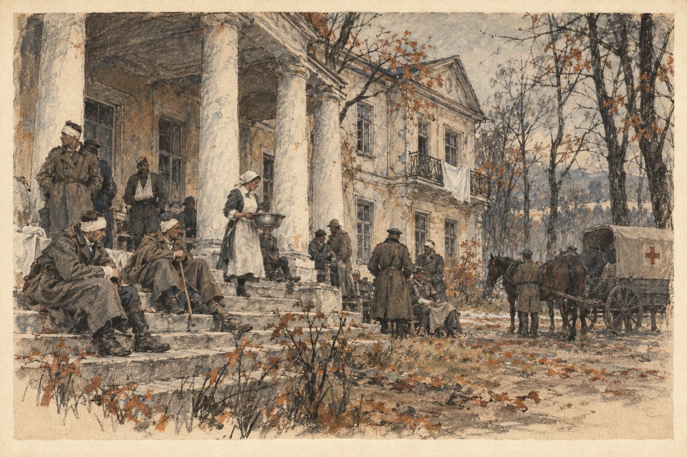

§4. Отечественная война и Вторая республика (1940-е)

В 1933 году к власти в Германии пришли нацисты. В 1939 году они напали на Польшу, в 1940 году разбили Францию. Россия оставалась в стороне: генерал Ладыженский надеялся, что война её не коснётся. Он ошибся. Гитлер открыто говорил, что немцам нужны земли на востоке.
11 мая 1941 года германские войска перешли границы Литвы и Украины, а через две недели вступили на русскую землю. Русская армия была храброй, но плохо вооружённой: танков и самолётов не хватало. За первое лето немцы взяли Киев, Минск и Смоленск и подошли к Петрограду. К зиме фронт остановился на линии Псков, Ржев, Брянск, Харьков и простоял там почти два года.
Россия воевала в союзе с Великобританией и Соединёнными Штатами. Союзники везли грузовики, самолёты и продовольствие через Мурманск, а с востока через Владивосток: Дальневосточная республика в войну не вступила, но пропускала американские грузы по железной дороге. Заводы перевозили за Волгу и на Урал, туда же шли эшелоны с беженцами. В тыловых губерниях в уцелевших усадьбах устраивали госпитали и детские дома. В 1943 году армия перешла в наступление. Весной 1945 года русские войска взяли Кёнигсберг и Варшаву, а союзники вошли в Берлин. Война стоила России около девяти миллионов жизней.
Генерал Ладыженский умер в 1944 году, не дожив до победы. Вернувшиеся с фронта солдаты не хотели жить по-старому. В 1946 году прошли первые за четырнадцать лет свободные выборы, а в 1947 году была принята новая конституция. Этот порядок, при котором мы живём и сейчас, называют Второй республикой.
Грузия, как и Турция, в войне не участвовала. В Тбилиси съехались беженцы со всей Европы, и после войны многие там остались.
Запомните даты. 11 мая 1941 года: начало Отечественной войны. Май 1945 года: победа. 1947 год: конституция Второй республики.
Вопрос. Почему Россия оказалась не готова к войне? Что изменилось в стране благодаря людям, которые с неё вернулись?